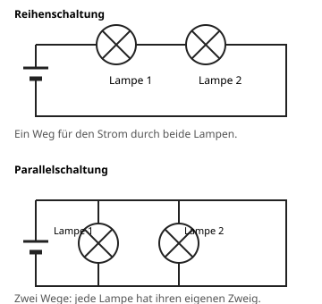

Die Reihenschaltung
Mit einem KI-Tutor lernen
Ein KI-Tutor erklärt dir diese Seite und hilft dir bei den Übungen. Wähl deinen Assistenten:
Mit Claude öffnen Mit ChatGPT öffnen Mit Mistral Vibe öffnen
Du nutzt dein eigenes Konto beim Anbieter. Der Assistent ist kein Angebot von lernapps.net: lernapps liefert nur Inhalte und Übungen. Die Wahl gilt für alle Seiten, nur auf diesem Gerät.
Warum?
Eine alte Lichterkette geht komplett aus, wenn eine Lampe kaputt ist. Warum ist das so?
Erklärung
Bei einer Reihenschaltung sind die Bauteile hintereinander verbunden. Der Strom hat nur einen Weg und muss durch alle Bauteile nacheinander.
- Reihenschaltung
In einer Reihenschaltung sind Bauteile hintereinander geschaltet. Der Strom hat nur einen Weg durch alle Bauteile.

Betrachte zuerst den oberen Plan. Folge der Leitung mit dem Finger, sie führt nacheinander durch beide Lampen.
Quelle: eigene Zeichnung. Lizenz: CC-BY-4.0.Fällt in einer Reihenschaltung ein Bauteil aus, ist der Weg unterbrochen. Der Stromkreis ist offen, und alle Bauteile gehen aus.
Der Strom fließt dabei in einem Umlauf in eine Richtung. Er kommt nicht von beiden Seiten in die Lampe.
Beispiel
Eine Lampe wird herausgedreht
Zwei Lampen sind in Reihe geschaltet. Du drehst Lampe 1 heraus.
- An der Stelle von Lampe 1 ist jetzt eine Lücke.
- Der einzige Weg des Stroms ist unterbrochen.
- Auch Lampe 2 bekommt keinen Strom und geht aus.
Übung
Übung
Lösung
Sie geht ebenfalls aus. richtige Antwort
Der Strom hat nur einen Weg. Ist er an Lampe 1 unterbrochen, fließt nirgends Strom.
Sie leuchtet weiter.
Das gilt für die Parallelschaltung, in der jede Lampe einen eigenen Zweig hat.
Sie leuchtet heller, weil der Strom nur noch zu ihr fließt.
Es fließt gar kein Strom mehr. Der einzige Weg ist unterbrochen.
In einer Reihenschaltung unterbricht der Ausfall eines Bauteils den ganzen Stromkreis.
Mehr dazu:
Übung
Lösung
In einem Umlauf in eine Richtung durch alle Lampen nacheinander. richtige Antwort
Der Strom fließt vom einen Pol der Quelle durch die Bauteile zum anderen Pol.
Von beiden Seiten in jede Lampe hinein.
Das wäre kein Umlauf. Im Kreis fließt der Strom in eine Richtung, nichts stößt in der Lampe zusammen.
Er wird in der ersten Lampe aufgebraucht, die zweite bekommt den Rest.
Strom wird nicht aufgebraucht. In allen Lampen der Reihe fließt derselbe Strom.
In der Reihenschaltung fließt der Strom in einer Richtung durch alle Bauteile nacheinander.
Mehr dazu: